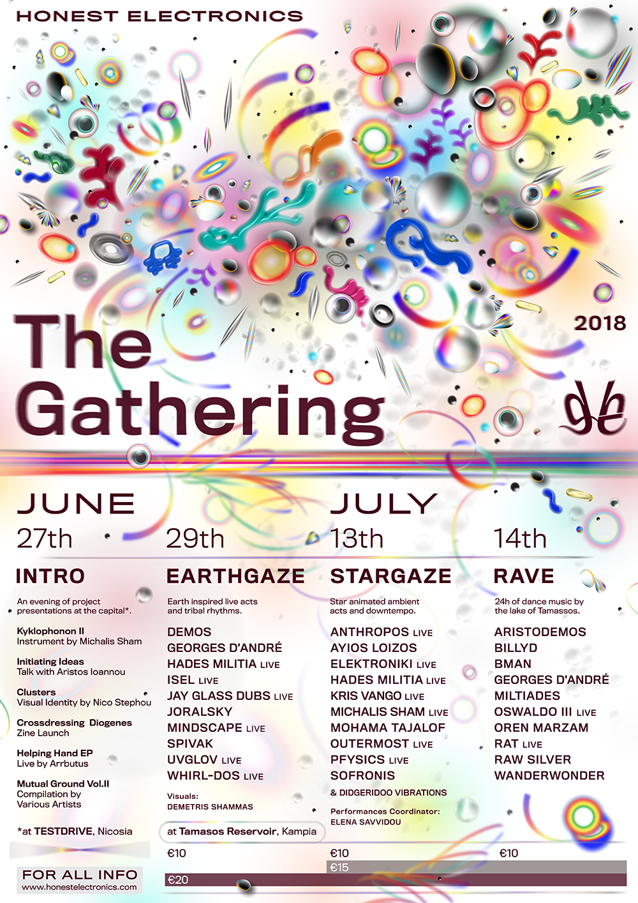
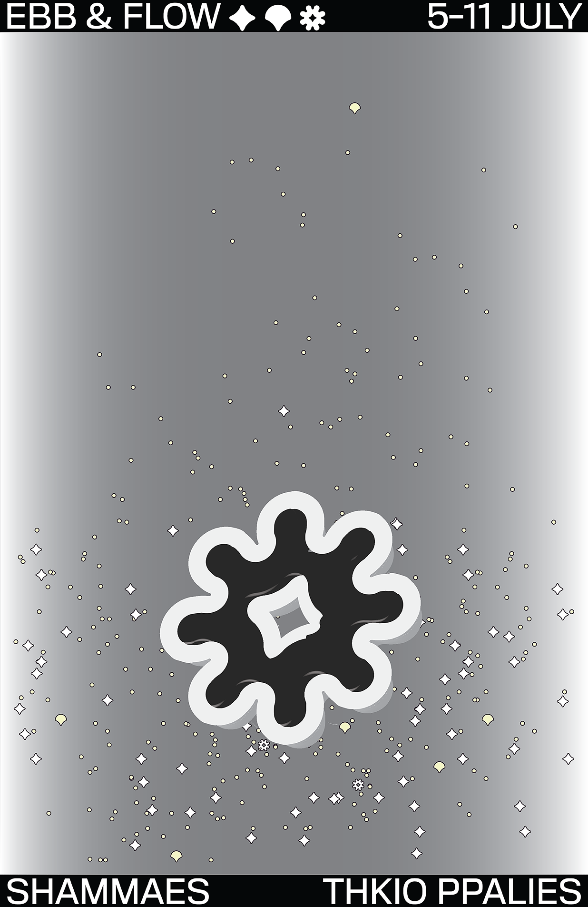
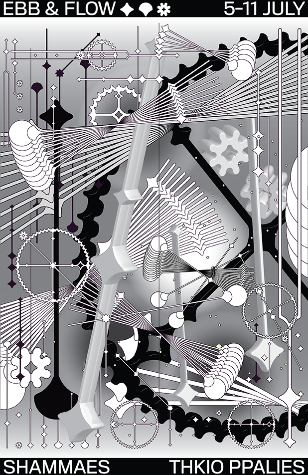
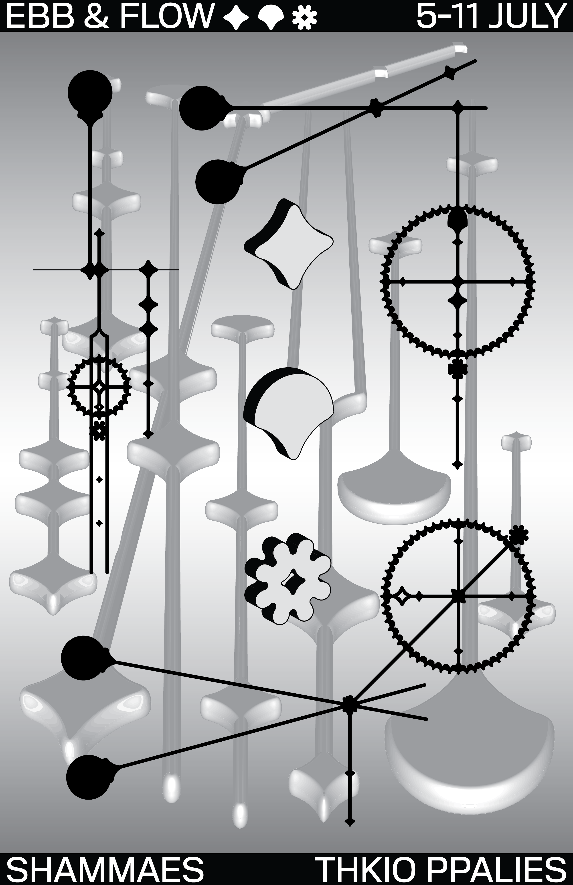
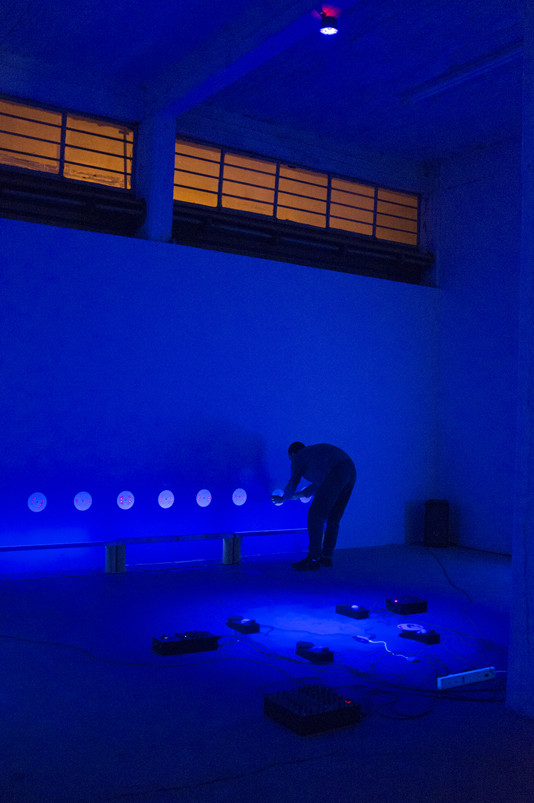
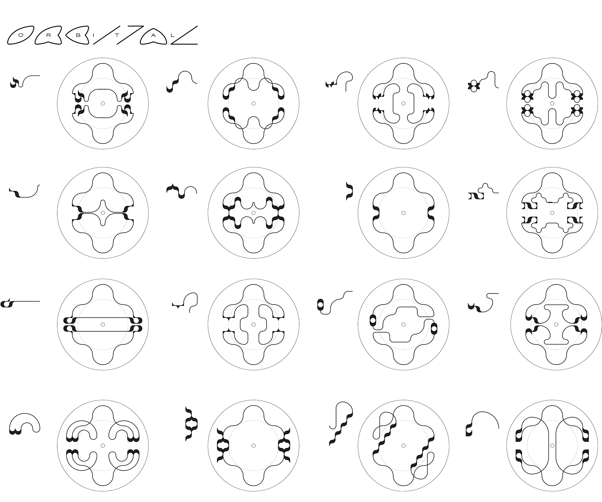
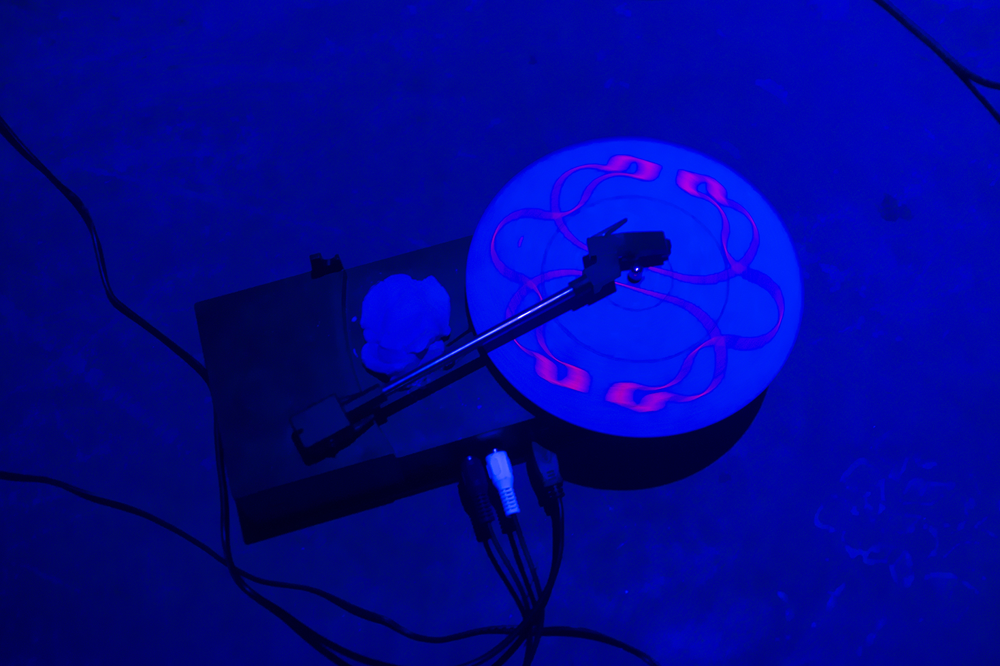
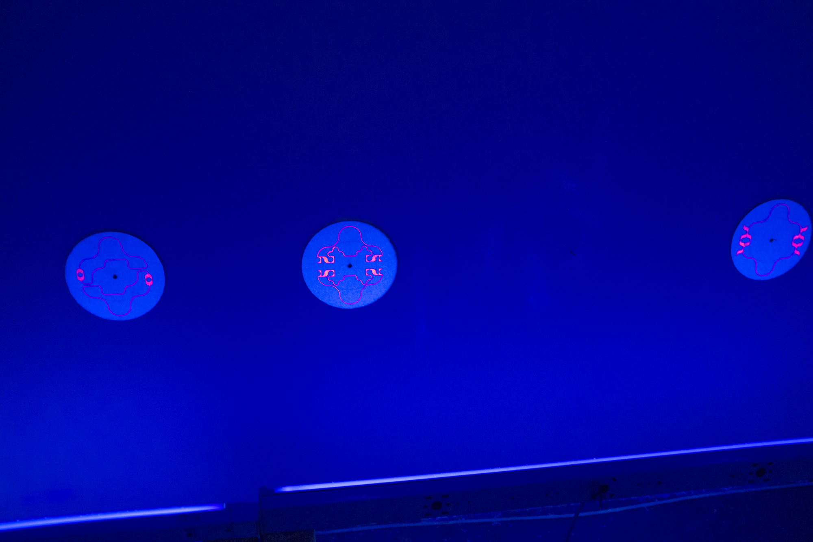
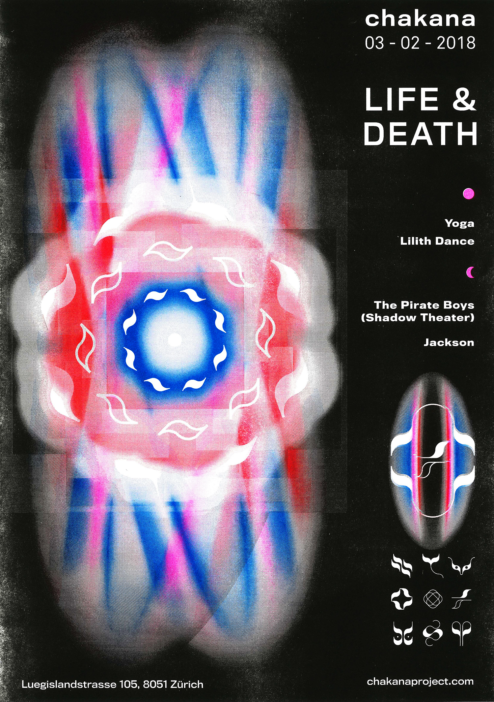
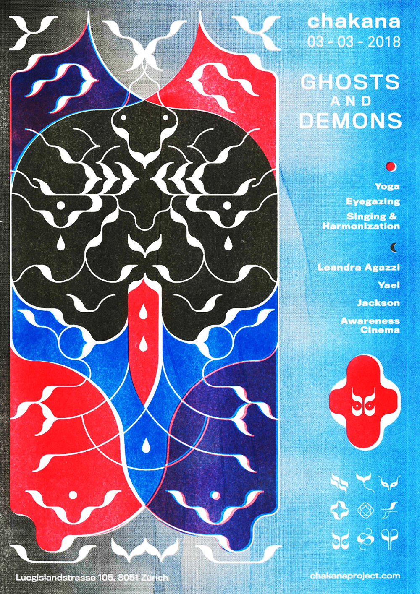

Nico Stephou
Graphic Designer / Art Director
I am a graphic designer working on identities, printed matter, digital projects and visual research. As an art director I have worked for multiple foundations, record labels and art projects. I have also co-founded the community platform and record label Honest Electronics and the yearly festival “The Gathering”.
In 2017 I have graduated from the Graphic Design Department of "Gerrit Rietveld Academie" in Amsterdam, Netherlands.
The Gathering III
Art Direction & Graphic Design
The Gathering is a yearly festival organised by Honest Electronics in order to promote local underground talent.


EBB & FLOW by Shammaes
Poster Design
Opening: Thursday, 5 July 2018, 19:00
Duration: 5-11 July
up and down.
right and left.
back and forth.
Ebb & Flow is a sound installation by Shammaes that brings together their respective interests in sound, design and architecture. The installation itself collides classic dualities, but by placing them in direct confrontation it ends up problematizing them.
mechanics and dynamics.
automata and avalanches.
harmonic and chaotic.
As time changes so do sounds and their convolution. The mechanical oscillation’s contact with soil is done at the expense of harmonicity and constancy. In some sense then, this form of oscillation resembles more and more to some other, more primordial ones; namely, that of a tide’s ebb and flow.



Orbital
Personal Multidisciplinary Performance
“Orbital” is a multidisciplinary project in which I creates sounds out of shapes. By creating a family of symbols, I propose a language. These symbols are translated into records, one record for each. The combination of these symbols lead to sound-sentences. By playing four of them at the same time on a quadraphonic sound system, I create a sonic image of this graphical conversation. The performance at Thkio Ppalies will lasted for three hours. The crowd was able to walk in and out of the space at any time as the atmosphere was intended for meditation.





Modus Operandi 17
Graphic Design; Logo, 2 Publications & Website
“Orbital” is a multidisciplinary project in which I creates sounds out of shapes. By creating a family of symbols, I propose a language. These symbols are translated into records, one record for each. The combination of these symbols lead to sound-sentences. By playing four of them at the same time on a quadraphonic sound system, I create a sonic image of this graphical conversation. The performance at Thkio Ppalies will lasted for three hours. The crowd was able to walk in and out of the space at any time as the atmosphere was intended for meditation.
Chakana
Zurich
Graphic Designer — 10 Events
Opening: Thursday, 5 July 2018, 19:00



Art Director
+ 357 97686822
nico.stephou@gmail.com
Powered by w3.css